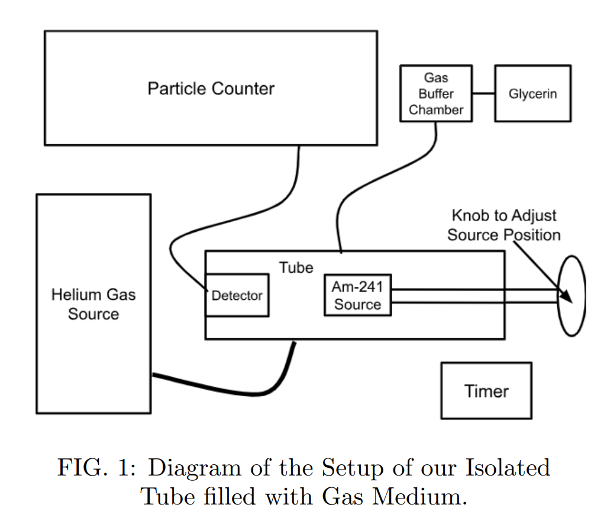
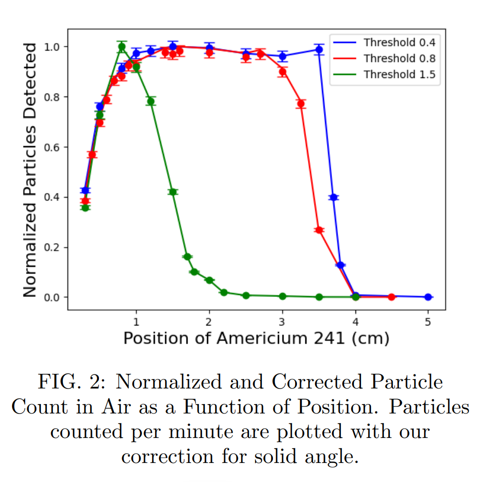
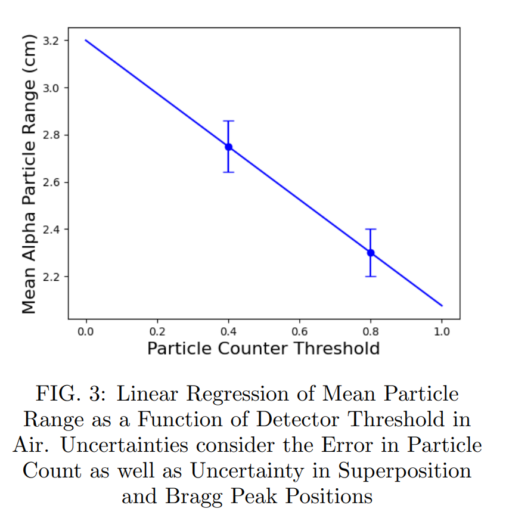
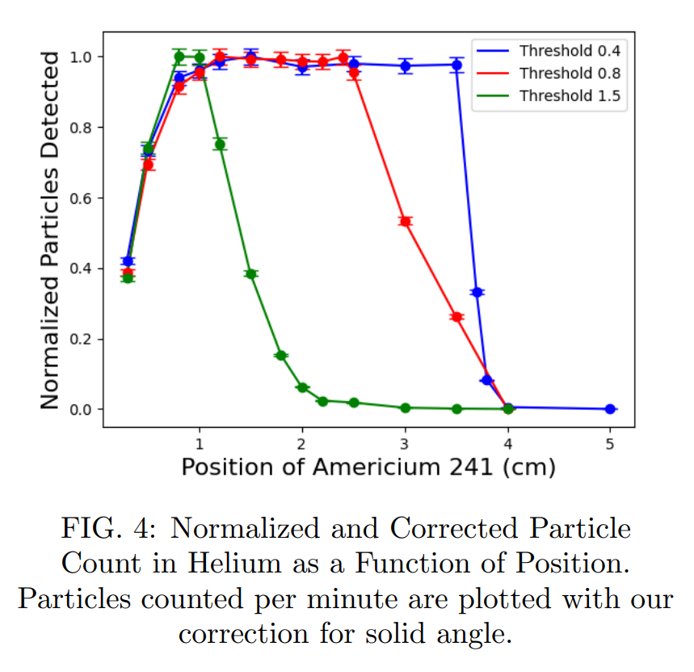
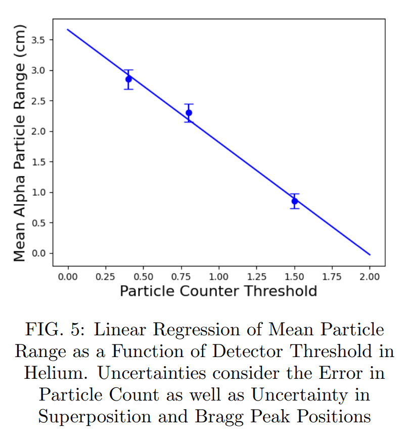

Alpha Particle Range & Straggling Analysis
Keywords: Solid-State Detectors | Spectroscopy | Bragg Curve Analysis | Statistical Modeling
View Full Lab Report (PDF)Overview
Alpha particles, energetic helium nuclei produced through radioactive decay, lose energy rapidly as they traverse matter, resulting in a finite and measurable range. In this experiment, we investigated the mean range and straggling of alpha particles in air and helium at atmospheric pressure using an Americium-241 source and a silicon solid-state detector. By measuring the particle count as a function of source-detector separation at several detection thresholds, we reconstructed the shape of the Bragg curve and analyzed how threshold settings influence the observed stopping behavior.
Introduction & Theory
As these particles traverse through different mediums, they lose energy primarily through Coulomb interactions with the electrons and nuclei of the atoms they encounter. A consequence of this energy loss is a limited range in which alpha particles can travel through before losing all their energy. In previous experiments examining the range of radioactive particles, a phenomenon known as the Bragg peak was observed, which signifies that an alpha particle requires the most stopping power when it approaches its range. The steep drop-off after the Bragg peak and the distance it takes from the peak until the plot reaches zero represents the straggling of a particle. By comparing measurements in air and helium, two gases with significantly different densities and atomic structures, we directly observed how the physical properties of a medium alter both the mean range and the degree of straggling.
Apparatus and Methods
The setup consisted of an isolated tube filled with our desired gas. Inside the tube, Americium-241 acted as a source of alpha particles attached to a rod that connected to a knob outside the tube, allowing us to adjust the position of our source. On the outer shell of the rod, a ruler allowed us to know the position of the source within millimeter precision across a roughly 6.5 cm range.

On the opposite end of the tube, a silicon solid-state detector functioned by applying a reverse-bias voltage to collect electron-hole pairs generated when alpha particles lost their energy to Coulomb interactions. The particle counter recorded the incidents of electron-hole pair production, using a dial to set a minimum detection threshold. While this threshold prevented noise, it restricted the detection of lower-energy alpha particles; therefore, an accurate mean range was determined by performing the experiment across multiple thresholds and applying linear regression to predict the mean range at a zero threshold. Because the solid angle of alpha particles reaching the detector decreases as the source moves further away, the particle count was corrected using the proportionality $N_{C} \propto N \Delta x^{2}$.
Results and Discussion
We took three sets of measurements for each gas at different thresholds. An important observation was that as the threshold increased, the straggling seemed to increase and the Bragg peak shifted closer to the detector.
- Air Measurements: At the 0.4 threshold, the straggling was only 0.5 cm, giving a mean range of 2.75 ± 0.11 cm. For the 0.8 threshold, the drop-off was much more gradual, resulting in a straggling of 1.3 cm and a mean range of 2.20 ± 0.10 cm. Plotting the mean ranges against the thresholds provided a zero-threshold estimate of 3.20 ± 0.17 cm in air.
- Helium Measurements: Helium gas is less dense than air at the same pressure, meaning less interaction occurs between helium atoms and alpha particles, leading to less energy lost per distance traveled. At a threshold of 1.5, we determined a mean range of 0.85 ± 0.12 cm with 1.8 cm of straggling. Linear regression of these values gave an estimated zero-threshold mean range of 3.66 ± 0.18 cm in helium gas.




Conclusion
Our data consistently showed that lower thresholds produced more reliable Bragg curves, while higher thresholds shifted the apparent Bragg peak and broadened the straggling region, demonstrating how detector settings can significantly affect experimental outcomes. The extrapolated zero-threshold ranges were within the expected order of magnitude for both gases. The shorter measured range in air and the longer range in helium align with theoretical expectations based on gas density, validating the overall behavior of charged-particle energy loss.